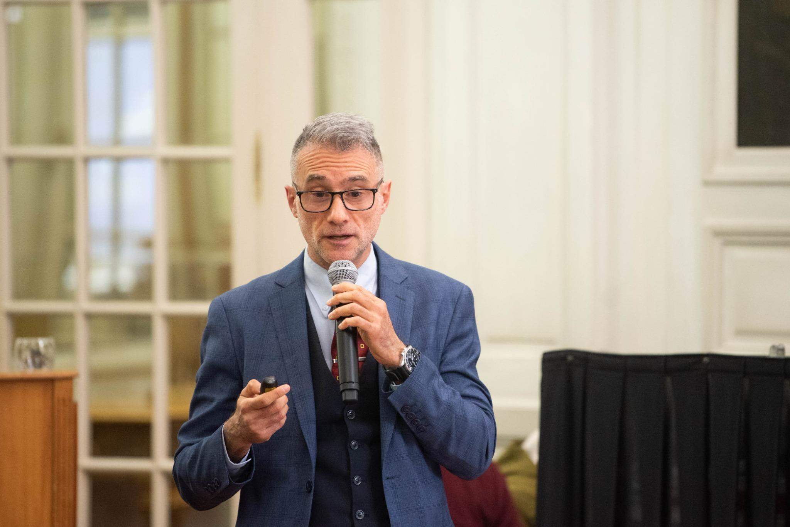

30 años de trayectoria en conflictos complejos, divorcios, violencia familiar y situaciones que requieren claridad, estrategia y acompañamiento profesional.
Fernando Horowitz es abogado, periodista y docente universitario. Fue Director Nacional del Sistema Argentino de Información Jurídica (SAIJ) del Ministerio de Justicia de la Nación. Se especializa en conflictos complejos, divorcios, violencia, hostigamiento, sucesiones, situaciones familiares sensibles y despidos.
Destraba situaciones complejas con experiencia, negociación y un enfoque práctico. Acompaña a personas que atraviesan conflictos familiares, violencia, hostigamiento, despidos y momentos difíciles, donde las decisiones jurídicas impactan en la tranquilidad, la familia y el futuro.
"Trabajo en situaciones que requieren claridad, respaldo profesional y capacidad para ordenar conflictos sensibles. Eso es lo que hago desde hace 30 años."
Su formación como periodista le permite comunicar con claridad cada etapa del proceso legal, en un lenguaje accesible para las personas que lo necesitan. Su rol como docente universitario lo mantiene en permanente actualización y contacto con las nuevas generaciones del derecho.

Una carrera construida en los casos más difíciles, con un enfoque que combina rigor jurídico, comunicación efectiva y acompañamiento humano.
Cada situación requiere entender correctamente el problema antes de tomar cualquier decisión. Analizo cada caso en profundidad para definir el camino más efectivo.
No solo gestiono el expediente. Acompaño a la persona en cada etapa del proceso, con comunicación directa y explicaciones claras en cada momento.
Cada caso es diferente. La estrategia se define en función de la situación concreta, los objetivos de la persona y las posibilidades reales del proceso.
Cada consulta y cada caso son tratados con absoluta reserva y discreción. La privacidad de las personas y sus familias es una prioridad irrenunciable.
En situaciones de alta conflictividad, el tiempo es un factor crítico. Actúo con rapidez para evitar que los problemas se agraven innecesariamente.
Explico cada paso del proceso en lenguaje claro, sin tecnicismos. Mi formación periodística me permite traducir el derecho en términos comprensibles.
Consultá tu situación de manera confidencial y sin compromiso. Te respondo personalmente a la brevedad.
Primera orientación gratuita.
Consultar ahora